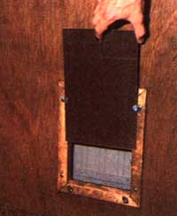
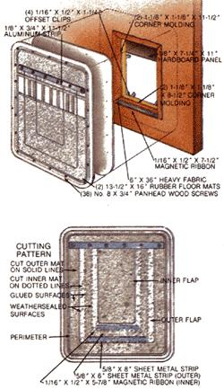

A Homebuilt Pet Door
Making a pet door from household materials.
By Mother Earth News staff
November/December 1984
Winter can be cold and cruel... but your pet doesn't have to be on the
outside looking in.
When the mercury drops to the single digits, life can be very unfriendly to fourlegged family members living outdoors. Yet even the most compassionate pet owners will admit that playing doorman to a whimsical animal gets old fast, during both winter and summer . . . so here's a solution that spans the seasons and satisfies host and guest alike: a weathertight pet door designed to fit both beast and budget.
The idea, of course, is nothing new. You can purchase animal access ports at pet shops anywhere . . . if you don't mind spending somewhere between $30 and $60. But a quick trip to a discount mart (and a few moments in your back-room junk bin) should yield enough inexpensive materials to allow you to make-for no more than $10 or so-your own auxiliary access like the one we show here.
The main ingredient for this project is a set of automobile rear-seat floor mats, which retail for about $6.99. Ours are rubber (which is supple but tears more easily than vinyl) and measure 13-1/2" X 16", fine for cats and small dogs. If your friend is more substantial, you'll probably have to spend a bit more and buy 16" X 28" front mats, preferably those without bulky embossments.
In addition to the flexible flaps, the small door that we built consists of two strips of medium-gauge sheet metal (one 5/8" X 6" and the other 5/8" X 8"), some l/16" X 1/2" magnetic ribbon cut to 5-7/8" and 7-1/2" lengths (if you can't find this among the houseware offerings at your usual retail outlet, you might try a stationery store), a 6" X 36" swatch of canvas or Leatherette, 40" of 1-1/8" corner molding, an aluminum strip measuring 1/8" X 3/4" X 11-1/2", four 1/16" X 1/2" X 1-1/4" metal offset clips, a piece of 1/8" X 7-1/4" X 11" Masonite or hardboard, and a total of 38 No. 8 X 3/4" panhead wood screws.
If you plan to install your hound hatch in a hollow- or solid-core flush door that's 1-3/8" or 1-3/4" thick, the materials that we used will suffice. However, if you've got your eye on a panel door, first make sure the inserts are large enough to accommodate the floor mats you have in mind and then substitute bolts for the wood screws and 1" trim for the corner molding. (You won't need the fabric at all, since there's no core gap to cover.)
Naturally, you'll have to have a few tools to make the installation, but they're nothing fancy. We used a drill with bits of 1/8" (for the pilot holes), 11/64" (for the shoulder bores), and 1/4" (to start the rough-opening cut) . . . a 3/4" hole saw . . . a utility knife . . . a ruler and pencil . . . a keyhole saw . . . a jigsaw . . . and a pair of scissors. Sandpaper and a good mastic (upholstery or windshield cement) were the only other materials we required.
Prior to fitting your port in place, you'll need to cut the rubber or vinyl mats to the pattern shown in our illustration, then glue the sheets together at their perimeters. Since the access is smaller than the pads, the rough opening in the wooden door should be sized just slightly larger than the inner flap (ours is 7" X 9-1/2") so there's a wooden lip exposed at the lower edge. Feel free to experiment with whatever dimensions suit your particular situation, according to the limits permitted by the mats you've chosen.
Once you've joined the rubber sections, you can glue the shorter magnetic ribbon to the exterior lip of the inside flap and fasten the two metal strips to their respective recesses on the interior face of the outside flap. Then cement the fabric over the exposed core of the door so there's a 1" overlap on the inside face (this will be covered with molding, but you can trim any excess later) and several inches on the outside.
With that done, align the mat assembly over the opening in the door in such a way that the inside flap remains free to move and the cuts terminate at the top of the rough opening. Fasten a series of wood screws about 3" apart around the pad's perimeter, then drill 11/64" holes-spaced 2-1/4" from each other-through the aluminum strip, and screw that piece into the wood at the upper edge of the opening as a rip stop. Finish up the exterior by gluing the remaining magnetic ribbon to the exposed fabric at the lower edge of the passageway.
The inside trim should be mitered and fastened over the fabric, with two of the offset clips placed on the lower screws and the other two attached to the upper sides. The hardboard panel-with a 3/4" hole drilled through one end of it-slips behind the clips and prevents the port from being used.
You'll probably discover that dogs and cats get into the "swing" of things and figure out their door fairly quickly. The only problem you might run into (besides visits from unwanted feline, canine, or woodland guests) is that posed by the existence of an exterior storm door . . . and if you're really compassionate, you probably won't mind removing a kick panel for a pal.
 Click on the image to enlarge. |
 |
 |